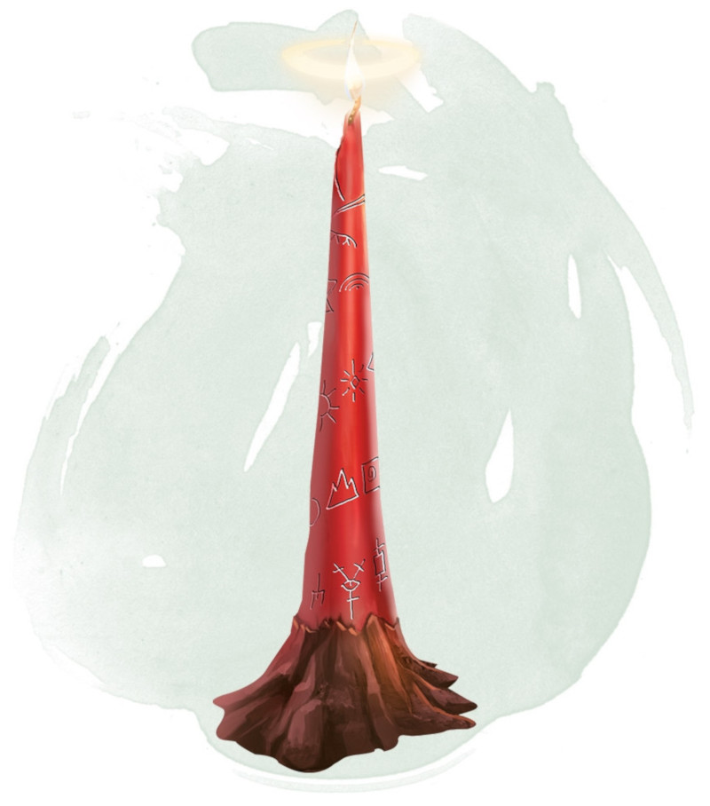

Cierge d'invocation
Objet merveilleux, très rare (nécessite un lien)
Cette mince chandelle est dédiée à une divinité et partage l'alignement de cette divinité. L'alignement du cierge peut être détecté avec un sort de détection du mal et du bien. Le MD choisit le dieu et l'alignement qui lui est associé ou détermine l'alignement du cierge de manière aléatoire.
La magie du cierge est activée lorsque le cierge est allumé, ce qui nécessite une action. Après avoir brûlé pendant 4 heures, le cierge est détruit. Vous pouvez souffler sa flamme avant pour pouvoir l'utiliser plus tard. Déduisez la durée de combustion déjà écoulée (arrondie à la minute supérieure) de la durée totale maximale.
Tant qu'il est allumé le cierge émet une lumière faible dans un rayon de 9 mètres. Toute créature se trouvant dans cette lumière et partageant le même alignement que le cierge effectue ses jets d'attaque, de sauvegarde, et de caractéristique avec un avantage. De plus, un clerc ou un druide se trouvant dans cette lumière et partageant l'alignement du cierge peut lancer un sort de niveau 1 qu'il a préparé sans dépenser l'emplacement de sort associé, à condition que ce sort de niveau 1 soit lancé en utilisant un emplacement de niveau 1.
Sinon, lorsque vous allumez le cierge pour la première fois, vous pouvez lancer le sort portail grâce à lui. Le cierge est cependant détruit lorsqu'il est utilisé de la sorte.
| d20 | Alignement |
|---|---|
| 1-2 | Chaotique mauvais |
| 3-4 | Chaotique neutre |
| 5-7 | Chaotique bon |
| 8-9 | Neutre mauvais |
| 10-11 | Neutre |
| 12-13 | Neutre bon |
| 14-15 | Loyal mauvais |
| 16-17 | Loyal neutre |
| 18-20 | Loyal bon |
La magie du cierge est activée lorsque le cierge est allumé, ce qui nécessite une action. Après avoir brûlé pendant 4 heures, le cierge est détruit. Vous pouvez souffler sa flamme avant pour pouvoir l'utiliser plus tard. Déduisez la durée de combustion déjà écoulée (arrondie à la minute supérieure) de la durée totale maximale.
Tant qu'il est allumé le cierge émet une lumière faible dans un rayon de 9 mètres. Toute créature se trouvant dans cette lumière et partageant le même alignement que le cierge effectue ses jets d'attaque, de sauvegarde, et de caractéristique avec un avantage. De plus, un clerc ou un druide se trouvant dans cette lumière et partageant l'alignement du cierge peut lancer un sort de niveau 1 qu'il a préparé sans dépenser l'emplacement de sort associé, à condition que ce sort de niveau 1 soit lancé en utilisant un emplacement de niveau 1.
Sinon, lorsque vous allumez le cierge pour la première fois, vous pouvez lancer le sort portail grâce à lui. Le cierge est cependant détruit lorsqu'il est utilisé de la sorte.
Dungeon Master´s Guide (SRD)
